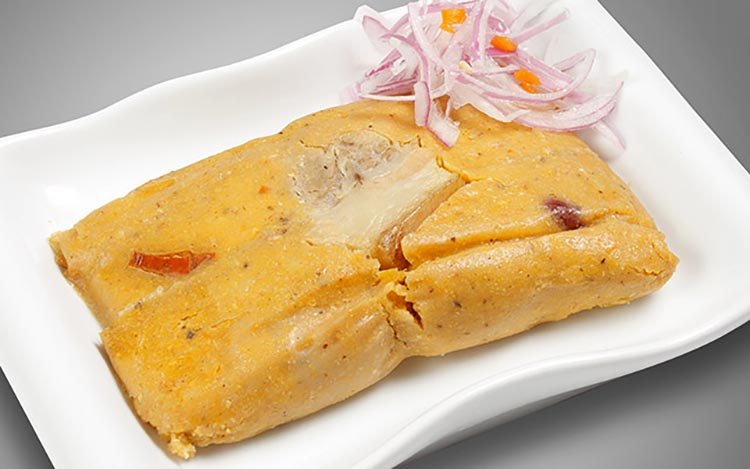

Tamales

Traditional Mesoamerican dish made of masa, a dough made from nixtamalized corn, which is steamed in a corn husk or banana leaf. The wrapping can either be discarded prior to eating or used as a plate. Tamales can be filled with meats, cheeses, fruits, vegetables, herbs, chilies, or any preparation according to taste, and both the filling and the cooking liquid may be seasoned.
Ingredients
Marinade
- 1 large onion chopped
- 4 garlic cloves
- 1 large red bell pepper chopped
- 1 large green bell pepper chopped
- 4 scallions chopped
- 4 tablespoons ground cumin
- 3 tablespoons sazon Goya with azafran or Color
- Salt
- 2 cups water
Filling
- 1 pound pork belly cut into 12 pieces
- 1 ½ pounds pork meat cut into 12 pieces
- 2 pounds bone in pork ribs cut into pieces
- 3 large potatoes peeled and diced
- 1 cup peas fresh or frozen
- 1 cup carrots peeled and diced
Masa
- 1 pound yellow precooked corn meal masarepa
- 5 cups water
- Salt
- ½ cup marinade
- 2 tablespoons sazon Goya with azafran or color
Wrapping
- 2 pounds banana leaves cut into pieces about 15 inches long
- String
- Water and Salt to cook the tamales
Instructions
- Place all the marinade ingredients in the blender and blend until smooth. Reserve ½ cup of the marinade to prepare the masa.
- In a large plastic bowl place all the meat, add 1 ½ cups of the marinade. Mix well, cover and refrigerate overnight.
Marinade meat
- To prepare the masa: Place the masarepa in a large bowl, add the water, salt, sazon Goya or color and reserved marinade. Mix well with a wooden spoon or your hands.
Masa
- Wash the leaves well with hot water and set aside.
Leaf
- To assemble the tamales: Place 1 piece of the leaf on a work surface and place a second leaf on top, pointing in the opposite direction, like forming a cross.
- Spread ¾ cup of masa in the center of the banana leaves, at the point where they connect and form a cross. Place 1 piece of pork, 1 piece pork belly and 1 piece of rib on top of the masa and place about 1 tablespoon of peas, 1 tablespoon of carrots and 2 tablespoons of potatoes on top of the meat.
- Fold the banana leaves up, one of the four sides at the time, so that the leaves enclose all of the filling, like you're making a package. Tie with butcher's string. Continue the process until all the tamales are wrapped and tied.
- Bring a large pot with salted water to a boil. Add the tamales and then reduce the heat to low. Cover and cook for 1 hour and 45 minutes. Remove the tamales from the pot and let them sit for about 5 minutes before serving. Cut the stirring and serve in the leaves. Serve hogao on the side if desired.
Go back